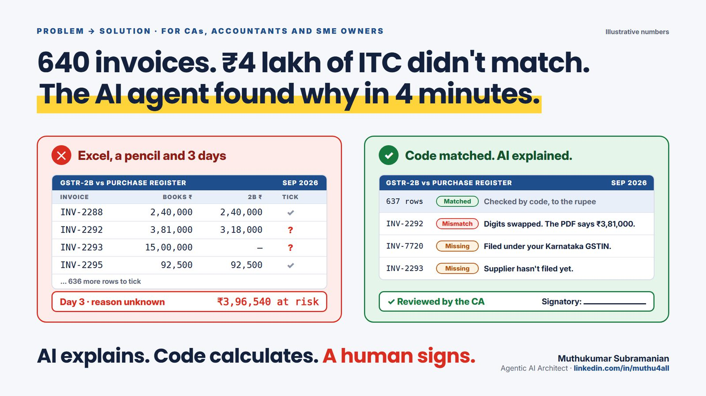
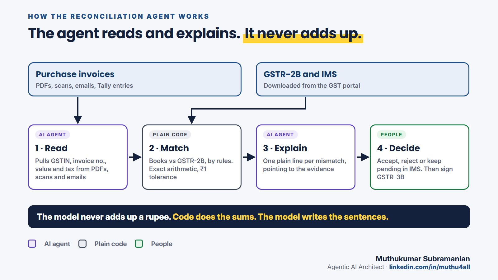
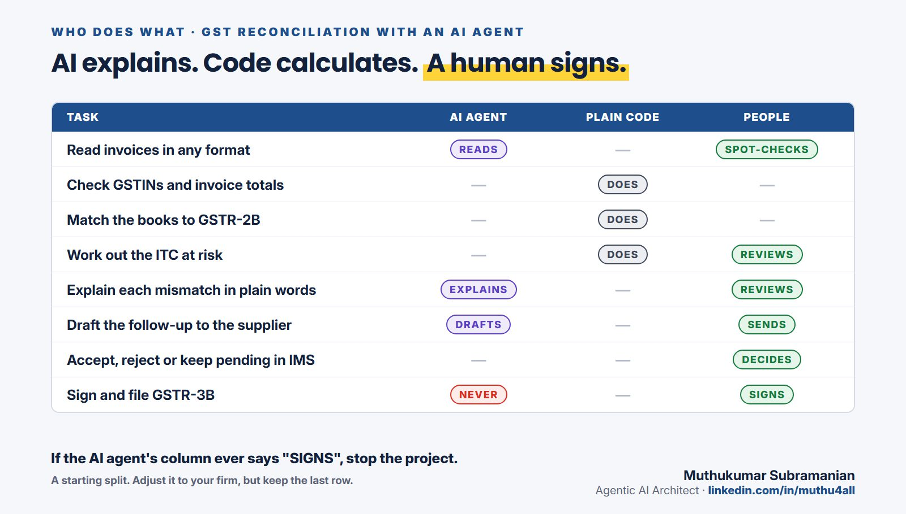

A ₹4 Lakh GST Mismatch. Your AI Agent Found It in 4 Minutes. Who Signs the Return?
By Muthukumar Subramanian · Agentic AI Architect

18 October, 7.30 in the evening, a CA firm in T. Nagar.
Divya, the junior accountant, is on day three of the same job. One client, an auto-parts distributor in Sriperumbudur. 640 purchase invoices for September. One Excel sheet from the books, one GSTR-2B download from the portal, a pencil, and a ruler she uses to keep her place on the screen.
After three days, ₹3,96,540 of input tax credit still doesn't match. She doesn't know why. The GSTR-3B is due on the 20th.
On the next desk, a pilot the firm is trying: an AI agent runs the same month. Four minutes. Three rows flagged, each with one line explaining why. (The firm, the client and every number here are illustrative. The evening is very real.)
Everyone in the office has the same question, and it isn't "how fast was it?" It's this:
If the agent did the work, who signs the return?
The problem: ITC lives or dies on a matching exercise
Since 1 January 2022, a business can claim input tax credit only for invoices that show up in its GSTR-2B. That's Section 16(2)(aa) of the CGST Act. If your supplier didn't report the invoice, or reported it wrongly, your credit doesn't appear. You paid the tax. You just can't take it back yet.
So every month, someone matches the purchase register against GSTR-2B, row by row. For a small firm that's a weekend. For a CA firm with 200 clients, it's the whole second half of every month.
And the portal is getting stricter, not looser:
→ Since October 2024, the Invoice Management System (IMS) lets you accept, reject or keep each supplier invoice pending. Accepted invoices flow into GSTR-2B. Pending ones wait.
→ From the July 2025 tax period, the outward-tax figures auto-filled in GSTR-3B are locked. You fix mistakes through GSTR-1A, not by typing over them.
→ From the November 2025 tax period, the portal won't accept a return more than three years past its due date. Old mistakes don't wait forever.
The rate changes of 22 September 2025, when most goods moved to two main slabs of 5% and 18%, added one more source of mismatches: suppliers still billing at an old rate.
None of this is hard. It's just slow, and slow work done at 7.30 PM on the 18th is where mistakes come from.
The solution: three jobs, and never mix them up
Here's my contrarian take. The tempting pitch is "let the AI do your GST." Don't. The most dangerous thing you can let an AI agent touch in a GST return is the arithmetic.
Language models are brilliant at reading messy invoices and explaining things. They're unreliable at adding 640 numbers. They'll give you a total that looks perfect and is off by ₹18,000, with complete confidence.
So split the work:
→ 1. AI reads. It pulls the GSTIN, invoice number, taxable value and tax out of PDFs, scanned bills and email attachments, in whatever format the supplier felt like using.
→ 2. Code matches. Plain rules compare the books with GSTR-2B. Exact arithmetic, a ₹1 tolerance, the same answer every time.
→ 3. AI explains. For each row that fails, one line a human can act on: "Digits swapped. The PDF says ₹3,81,000, so the supplier must amend." "Filed under your Karnataka GSTIN, not Tamil Nadu." "Not in GSTR-2B yet. The supplier hasn't filed."
→ 4. People decide. The accountant accepts, rejects or parks each invoice in IMS. The CA reviews. The business's authorised signatory signs the return.

That third step is where Divya's three days went. Finding a mismatch is easy for code. Working out why, by opening the PDF and noticing a swapped digit or a wrong state code, is the slow human part. That's exactly what AI is good at.
AI explains. Code calculates. A human signs.
👉 [GIF: B-day15-4-in-article-reconcile-and-sign.gif]
Caption: One month, 640 invoices: rows come in, code matches them, the agent explains the three failures, and nothing is filed until a person signs. All figures illustrative.
Who builds this inside a CA firm
Not a vendor demo. This is work for a forward deployed engineer (FDE): an engineer who sits inside the customer's team and ships on their real systems. Here that means two weeks in the firm, learning which clients send scanned bills, what tolerance the partners accept, and which suppliers always file late.
After go-live, someone has to own the agent's behaviour: what it may draft, what it must never touch, when it escalates. Some firms are starting to call that person an AI Agent Manager. The title is still settling. In a 20-person firm, it's probably the senior manager who already reviews everyone's work.

The hard parts
→ Confident wrong numbers. If anyone lets the model compute totals "just this once", it will eventually be wrong in a way that looks right. Keep the maths in code, and log every number back to a row.
→ Client data leaving the building. Purchase registers carry suppliers, prices and margins. Use a company-approved AI workspace with a clear data agreement, never a free chat window.
→ AI can't fix a supplier. It can explain that the supplier hasn't filed. It can't make them file. Your credit still waits.
→ Explanations can be wrong too. "Digits swapped" is a guess until someone opens the PDF. Treat every explanation as a lead, not a finding.
→ Responsibility doesn't move. The return goes out under the business's authorised signatory, and the CA's review is their professional judgement. No tool changes that, and no client will accept "the agent said so" when a notice arrives.
The opportunity
→ For CA firms: the bottleneck was never matching. It was explaining. A firm that cuts three days to half a day per client can take more clients without hiring for the second half of every month.
→ For SME owners: ask your accountant one question: "How much of last year's ITC did we lose because nobody chased the supplier in time?"
→ For software teams: Tally Prime, Zoho Books and Clear already do GSTR-2B reconciliation. The gap is the plain-language "why" for every mismatch and a drafted follow-up to the supplier, in English or Tamil.
→ For founders and IT services firms: sell "reconciliation with reasons" to CA firms as a service, with an FDE who sets it up and stays for the first two filing cycles.
The tax return was always a human promise. AI can make it faster. It can't make the promise for you.
Your turn 👇
If an AI agent reconciled your GST, would you sign the return without your CA's review? Yes or no.
Tag the accountant in your life who spends the 18th of every month ticking invoices.